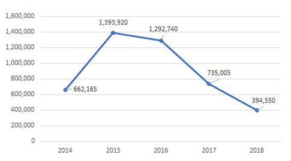
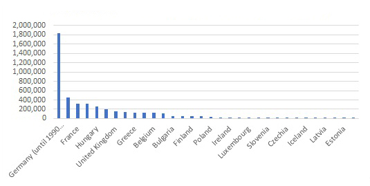
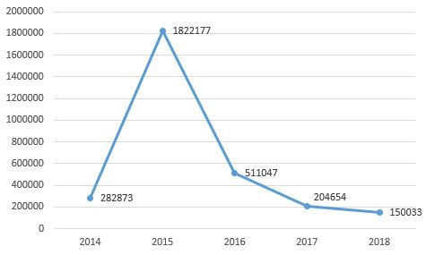

V rámci semestrální práce předmětu Sociální a ekonomické aplikace budu pracovat s problematikou Migračních proudů do Evropy za posledních 5 let. V rámci práce budu věnovat příčinám migrace do zemí EU, dále se podívám na statistiku migrantů v letech 2014-2018 a zanalyzuji vliv migrace na Evropská země.
Jedním z hlavních rysů lidské přirozenosti je od pradávna touha i potřeba po změně místa pobytu, ve smyslu přestěhovat se. Společně s dalšími právy a svobodami je právo na změnu bydliště zakotveno i deklaraci základních lidských práv a svobod.
“Každý má právo volně se pohybovat a svobodně si volit bydliště uvnitř určitého státu. Každý má právo opustit kteroukoli zemi, i svou vlastní, a vrátit se do své země.” (všeobecná deklarace lidských práv, článek 13)
Počet migrantů během posledních 5 let značně vzrostl. Svého vrcholu dosáhl v roce 2015, a byl roven 1 393 920 lidí. O tom informuje statistický úřad Evropské unie (Eurostat, 2018). Příčiny migrace mohou byt různé.
Graf 1: Počet migrantů v jednotlivých letech Zdroj: Eurostat |
Lidé se snaží přesunout do rozvinutějších zemí, najít dobrou práci, zakoupit majetek, dostat kvalitní vzdělání a zlepšit život sobě a svým dětem. Během toho se často bohužel dostávají do bezvýchodných životních situací, kdy se člověk dostává pod velký psychologický nátlak. V horším případě může být ohrožený na životě nebo může být ohrožen život jeho rodiny. Příčinou mohou být války, přírodní katastrofy a aspekty socioekonomické, ekonomické, politické, ekologické nebo religiózní. |
|---|
Pomocí statistických dat, která jsou poskytnuta Eurostatem jsem zjistil počet migrantů v zemích EU za posledních 5 let, tedy v letech 2014-2018. Interaktivní mapa jednoduše zobrazuje situaci zemi za danou dobu.
|
Zdroj: databáze Eurostat |
|---|
Na základě dat čitelných z mapy jsem určil celkový počet migrantů v jednotlivých zemích za poslední dobu. Na grafu níže je vidět, které země mají největší počet imigrantů. Zpravidla se jedná o rozvinuté země jako je Německo, Francie, Británie...
Graf 2: Celkový počet migrantů v jednotlivých zemích za posledních 5 letZdroj: Eurostat |
|---|
Pro zajímavost byla zpracována mapa, na které je vidět národnost migrantů, odkud a kam přicházejí. Data byla poskytnuta OSN.
|
Zdroj: databáze United Nations |
|---|
Na základě získaných dat, můžu říct, že většina migrantů prochází ze tří zemí – Sýrie, Afghánistánu a Jižního Súdánu. Přibližně víc než 80% zůstává v rozvojových zemích: v Turecku, Libanonu, Pákistánu. Jen malá část jich přišla do Evropy - především do Německa. Podle Eurostatu nejvíc migrantů v roce 2016 přišlo ze: Sýrie, Iráku, Afghánistánu, Nigérie a Pákistánu.
Daná situace vyvolala několik nebezpečných následků. Hlavním z nich je nelegální
překročení hranic. Jak objevila agentura Frontex, v rocích 2015-2016 bylo zaznamenáno největší
číslo počet nelegálních překročení hranic v letech 2015-2016 (Frontex, 2019). Zobrazil jsem
danou problematiku na grafu vedle, kde je vidět situaci nelegálně překročeních hranic během
posledních pěti let. Migrační proudy odhalily v evropském migračním systému nedostatky.
Evropský parlament prohlásil, že v planu je reformovat azylový
systém, vytvořit spravedlivá pravidla pro přerozdělování uprchlíků, posílit bezpečnost vnějších
hranic a zlepšit kontrolu nelegální migrace (Zpravodajství Evropskýého parlamentu, 2017). |
Graf 3: Počet nelegálních překročení hranic Zdroj: Frontex |
|---|
I když na základě získaných dat vidíme, že počet migrantů se časem snižuje, myslím si že daný problém v EU bude aktuálním ještě dlouhou dobu. Bavil jsem se s migranty v Česku i v zahraničí a všiml jsem si, že jim nevadí pracovat na černo, především pokud jsou dobře placení. Zároveň však chtějí být více respektování státem. Některé země, například Německo, finančně podporují nezaměstnané lidi (Emigranto, 2018). Myslím že tohle se odráží na ekonomice státu. Migrace má kladný vliv jak na přijímající tak i na odesílající země. V přijímající zemi se to vyjadřuje projevuje na ekonomice a trhu práce, na celkovém rozvoji a blahobytu země. V odesílající zemi to způsobuje snížení tlaku na trhu práce, pomocí peněžních převodů zlepšuje pozici rodiny migrantů, zvyšuje profesní kvalitu specialistů. Faktem je, že v poslední době se s migračním proudem znatelně vzrostla i kriminalita. Nejlepším příkladem může byt země s největším počtem imigrantů - Německo. Dané faktory určitě vyvolávají nespokojenost občanů Evropské Unie, kteří pak vyjadřují svou nespokojenost s vládou i vzniklou situací. (DW, 2018)
Migrační problém byl a je aktuální. V rámci daného semestrálního projektu jsme se seznámili s problémem migračních proudů, podívali jsme se na změny během posledních pěti let, seznámili jsme se s migračními trasami a dozvěděli jsme s čím plánuje bojovat Evropský parlament. Získaná data ukázala, že se migrační krize v Evropě časem zmírňuje..